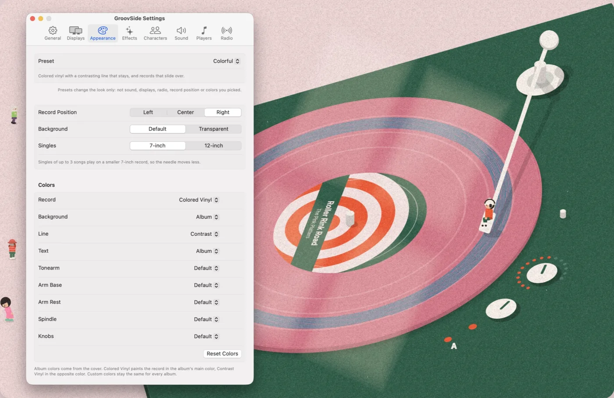

설정
GroovSide 설정을 탭별로 정리했습니다. 앱에서는 메뉴 막대의 레코드 아이콘을 누르고 Settings…를 고르면 설정 창이 열립니다. 아래 창도 앱처럼 탭을 누르면 내용이 바뀝니다. 항목에 마우스를 올리면 그 항목의 설명이 강조됩니다. 앱 화면은 영어입니다.
Auto uses 30 fps on battery and 60 fps when plugged in.
Show the record on these displays.
Presets change the look only: not sound, displays, radio, record position or colors you picked.
Singles of up to 3 songs play on a smaller 7-inch record, so the needle moves less.
Colors
Album colors come from the cover. Colored Vinyl paints the record in the album's main color, Contrast Vinyl in the opposite color. Custom colors stay the same for every album.
Light through a window follows the time of day.
How the record moves when the next song is on the other side of the same record.
How the record changes when the next song is from another album. Slide Over slides the old record out to the left and brings the new one in from the left, over it.
When the scene starts turning to the new album's colors: as the new record comes in, or once it settles onto the platter.
Rider
The little one on the needle. On Auto the pose sometimes changes when a new song starts.
Rider Colors
Crowd
The longer the music plays, the more friends drop by. When the music stops they head home one by one. Crowd Pace makes them come and go faster.
Quiet record player sounds over your music. Played on the main display only, and paused when the screen is locked or covered.
The needle touching down and lifting off, a record lifted, slid and set down.
The platter spinning up and winding down.
A soft hiss and crackle while the needle is in the groove.
A DJ spinback while you rewind a song in Music. Its volume is set apart from the other sounds.
The same spin, a little brighter, while you fast-forward a song in Music.
GroovSide needs permission to read what Music or Spotify is playing.
Each song plays on its own album's record.
One record for the station. Each song plays on the next band, and the record turns over when a side is full.
The label is the picture Music gives for the song: usually its cover, sometimes the station's logo.
The label is always the station's logo.
For live radio stations in Music.
앱 설정 창을 웹에 옮긴 사본입니다. 여기서 바꾼 값은 앱에 반영되지 않습니다.
General 일반
- Show on Desktop
- 턴테이블을 보이거나 숨깁니다. 메뉴 막대 메뉴에도 같은 항목이 있습니다.
- Open at Login
- Mac에 로그인하면 GroovSide를 자동으로 엽니다. macOS가 승인을 요구하면 시스템 설정의 로그인 항목 화면이 열립니다.
- Frame Rate
- 화면을 1초에 몇 번 그릴지 정합니다. Auto는 배터리를 쓸 때 30 fps, 전원에 연결하면 60 fps입니다. 30 fps는 전력을 덜 씁니다.
- Clear This Record
- 지금 돌고 있는 판에 바늘이 그린 선을 지웁니다. 다른 판의 선은 그대로 남습니다.
- Version
- 설치된 버전입니다. 업데이트는 App Store가 맡습니다.
Displays 화면
- 연결된 화면
- 화면마다 켜고 끌 수 있습니다. 끈 화면은 모니터를 뺐다가 다시 꽂아도 꺼진 상태로 기억합니다. (Main)은 메뉴 막대가 있는 화면입니다. 여기 나온 화면 이름은 예시입니다. 앱에서는 내 Mac에 연결된 화면 이름이 나옵니다.
Appearance 모양
- Preset
- 미리 맞춰 둔 다섯 가지 조합입니다. 배경, 효과, 모여드는 사람들, 컬러 바이닐, 선 색 방식을 한 번에 바꿉니다. 소리, 화면, 라디오, 레코드 위치, 직접 고른 색은 그대로 둡니다. 프리셋이 바꾸는 값을 하나라도 직접 바꾸면 Custom으로 표시됩니다.
- Classic 처음 설정 그대로입니다. 앨범 색, 창문 빛, 사라지는 잔상, 모여드는 사람들.
- Colorful 컬러 바이닐, 판에 남는 대비색 선, 옆으로 밀려 들어오는 판.
- Lively 컬러 바이닐, 더 자주 오가는 사람들, 밀려 들어오는 판, 판에 남는 선.
- Calm 사람들 없음, 옅은 그레인, 면이 바뀌면 바늘만 이동.
- Minimal 배경, 빛, 그레인, 사람들 없이 턴테이블만.
- Record Position
- 턴테이블을 화면 왼쪽, 가운데, 오른쪽 중 한 곳에 둡니다. 왼쪽에 두면 곡 정보는 오른쪽 위로 갑니다.
- Background
- Default는 방, 책상, 턴테이블 받침까지 그립니다. Transparent는 판, 톤암, 노브, 곡 정보만 내 바탕화면 그림 위에 그립니다. 창문 빛과 사람들은 나오지 않습니다.
- Singles
- 7-inch는 3곡 이하 싱글을 작은 7인치 판에 그립니다. 짧은 곡에서 바늘이 너무 많이 움직이지 않습니다. 12-inch는 LP 크기 판에 그립니다. 이미 놓인 판은 크기가 그대로입니다.
- Record
- 판 색입니다. Album은 커버에서 고른 색, Colored Vinyl은 앨범의 주된 색, Contrast Vinyl은 그 반대 색입니다. Custom을 고르면 옆에 색 상자가 나오고, 모든 앨범에 같은 색을 씁니다.
- Background
- 턴테이블 주변 배경 색입니다. 곡 정보 글자는 배경 밝기에 맞춰 밝거나 어둡게 바뀝니다.
- Line
- 바늘이 판 위에 남기는 선의 색입니다. Album은 커버의 강조색, Contrast는 그 반대 색입니다. 이미 그린 선은 그때 색 그대로 남습니다.
- Text
- 곡 정보 글자 색입니다.
- Tonearm
- 톤암의 팔, 균형추, 헤드셸, 바늘 색입니다. Default는 금속색입니다.
- Arm Base
- 톤암 아래 둥근 받침판 색입니다.
- Arm Rest
- 재생하지 않을 때 바늘이 놓이는 받침대 색입니다.
- Spindle
- 판 가운데 축 색입니다.
- Knobs
- 음량 노브와 속도 노브 색입니다.
- Reset Colors
- 이 묶음의 색을 모두 기본으로 되돌립니다. 바꾼 것이 없으면 누를 수 없습니다.
Effects 효과
- Window Light
- 네 칸 창문으로 들어온 햇빛이 책상 위에 비칩니다. Mac 시계를 따라 새벽에는 복숭아빛, 노을에는 주황, 밤에는 짙은 남색으로 바뀝니다. 투명 배경에서는 나오지 않습니다.
- Trail
- 판 위에 선을 남기는 방식입니다. Keep은 바늘이 지나간 선을 판에 그대로 남깁니다. 들을수록 판마다 그림이 쌓입니다. Afterglow는 바늘 뒤로 짧은 꼬리만 남았다가 사라집니다. 이때도 선은 저장되고 있어서 Keep으로 돌리면 다시 보입니다.
- Grain
- 화면 전체에 입힌 종이 같은 잡음 무늬를 얼마나 진하게 할지 정합니다.
- Side Change
- 다음 곡이 같은 판의 반대 면에 있을 때의 동작입니다. Lift & Turn은 판을 살짝 들어 반 바퀴 돌리며 새 면으로 바꾼 뒤 내려놓습니다. Swap Record는 다른 앨범처럼 판을 갈아 끼웁니다. Needle Only는 판은 그대로 두고 바늘만 옮깁니다.
- Album Change
- 다음 곡이 다른 앨범일 때의 동작입니다. Swap Record는 옛 판을 오른쪽으로 빼고 새 판을 왼쪽에서 가져옵니다. Slide Over는 옛 판을 왼쪽 위로 밀어내고 새 판이 그 위로 미끄러져 들어옵니다.
- Color Change
- 새 앨범 색으로 바뀌기 시작하는 때입니다. With Record는 새 판이 들어올 때, On Landing은 판이 플래터에 내려앉은 뒤입니다.
Characters 캐릭터
- Pose
- 바늘 위에 앉은 작은 캐릭터의 자세입니다. Sit, Lean Back, Cross-Legged, Hug Knees 중에서 고릅니다. Auto는 새 곡이 시작될 때 가끔 자세를 바꿉니다.
- Shirt
- 윗옷 색입니다. Album은 커버의 강조색입니다.
- Pants
- 바지 색입니다. Album은 턴테이블 받침 색을 따릅니다.
- Hat
- 모자 색입니다. Default는 흰색입니다.
- Reset Colors
- 캐릭터 색을 기본으로 되돌립니다.
- Crowd
- 오래 들을수록 작은 사람들이 하나씩 찾아옵니다. 몇 분 들으면 첫 사람이 오고, 한 번에 여섯 명까지 모입니다. 음악이 멈추면 손을 흔들고 하나씩 돌아갑니다. 투명 배경에서는 나오지 않습니다.
- Crowd Pace
- 사람들이 오고 가는 속도를 2배, 5배, 10배로 빠르게 합니다. 걸음과 동작도 빨라지지만 춤은 음악 박자를 따릅니다.
Sound 소리
- Record Sounds
- 음악 위에 작은 턴테이블 소리를 얹습니다. 녹음해 둔 소리가 아니라 앱이 그때그때 만듭니다. 처음에는 꺼져 있습니다. 주 화면에서만 나고, 화면이 잠기거나 잠자기 상태가 되면 멈춥니다.
- Volume
- 이 소리들 전체의 크기입니다.
- Needle & Record
- 바늘이 내려앉고 들리는 소리, 판을 들고 밀고 내려놓는 소리입니다.
- Motor
- 재생할 때 플래터가 돌기 시작하고, 멈출 때 서서히 서는 소리입니다.
- Surface Noise
- 바늘이 홈 위에서 재생 중일 때 나는 옅은 쉿 소리와 탁탁 튀는 소리입니다.
- Rewind · Rewind Volume
- Apple Music에서 되감을 때 나는 DJ 스핀백 소리입니다. 크기를 따로 정하며 최대 1.5배까지 키울 수 있습니다.
- Fast Forward · Fast Forward Volume
- Apple Music에서 빨리감을 때 같은 스핀 소리를 조금 더 밝게 냅니다. 크기는 따로 정합니다. Spotify는 빨리감기·되감기 상태를 알려 주지 않아 이 소리가 나지 않습니다.
- Play Test Sound
- 바늘 내리는 소리를 한 번 들려줍니다. Record Sounds가 꺼져 있어도 들립니다.
Players 플레이어
- Music · Spotify
- GroovSide가 각 앱에서 재생 중인 곡을 읽을 수 있는지 보여 줍니다. 처음 곡을 틀 때 macOS가 허용 여부를 묻고, 거절했으면 빨간 글씨로 Not Allowed가 나옵니다. GroovSide는 곡 정보를 읽기만 하고, 음악을 조작하거나 앱을 알아서 열지 않습니다.
- Open Automation Settings…
- 시스템 설정의 개인정보 보호 및 보안 ▸ 자동화 화면을 엽니다. 그곳에서 GroovSide 아래의 Music이나 Spotify를 켜면 됩니다.
Radio 라디오
- Record
- Apple Music 생방송 라디오에서 쓰는 설정입니다. Each Song은 곡마다 그 앨범의 판으로 바꿉니다. Station은 방송국마다 판 하나를 쓰며, 곡마다 다음 띠로 바늘을 옮기고 한 면이 차면 판을 뒤집습니다.
- Label
- From Music은 Music이 곡에 주는 그림을 라벨로 씁니다. 대개 곡 커버이고, 가끔 방송국 로고입니다. Station Logo는 늘 방송국 로고를 씁니다.
실제 설정 창

메뉴 막대 메뉴
메뉴 막대의 레코드 아이콘을 누르면 지금 나오는 곡과 Show on Desktop, Clear This Record, Settings…, Quit이 보입니다. Music과 Spotify가 둘 다 켜져 있으면 Player에서 판에 보여 줄 앱을 고를 수 있습니다. 플레이어를 읽을 권한이 없으면 Allow Control of Music… 항목도 나옵니다.
그 밖의 질문은 지원 페이지에 모아 두었습니다.